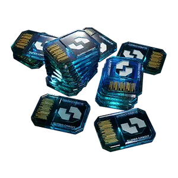
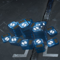

超级货币
Super Credits

基本信息 信息
描述
绝地潜兵 2 Premium 货币
Parent
货币
超级货币 are a 特殊 货币 in 绝地潜兵 2 used to buy Premium 战争债券, 传奇 战争债券，以及 Permanent items from the 超级商店 in the 获取 Center.
获取途径
- 绝地潜兵 can 购买 超级货币 through the 采购中心 for real money. They can be purchased in stacks of:
- 超级货币 for $1.99 (USD)
- 超级货币 for $4.99
- 超级货币 for $9.99
- 超级货币 for $19.99
- 超级货币 for $49.99
- 超级货币 for $99.99 (This is enough to buy 19 Premium 战争债券 in total, if combined with the 超级货币 received from 绝地潜兵动员令 and all other purchased 战争债券).
- 超级货币 can also be found in various Minor Places of Interest such as Pods, Cargo Containers, and Bunkers during missions. They will 通常 be found as a stack of 超级货币, but will very rarely appear as a stack of 超级货币.
- They can be found in both the 绝地潜兵 Mobilize! 战争债券 and in all Premium 战争债券.
- the 绝地潜兵 Mobilize! 战争债券 offers a stack of either 超级货币 or 超级货币 on every page for a total of 超级货币 throughout the 战争债券. The 费用 of each stack 增加 between each page ranging from
 1 to 50.
1 to 50. - 所有 Premium 战争债券 includes a stacks of 超级货币 on each page for a total of 超级货币 once the 战争债券 is completed. They 费用 7, 12，或 32 depending on the page.
- 传奇 战争债券 contain no 超级货币.
- In total, between the 绝地潜兵 Mobilize! 战争债券 and the Premium 战争债券, 超级货币 can be earned by spending 1,116.
- the 绝地潜兵 Mobilize! 战争债券 offers a stack of either 超级货币 or 超级货币 on every page for a total of 超级货币 throughout the 战争债券. The 费用 of each stack 增加 between each page ranging from
Detailed Information
Total costs are updated manually and might be outdated.
- Minor Places of Interest spawn more densely on easier difficulties (
 简单 -
简单 -  中型), making them a good place to find 超级货币. 绝地潜兵 can 农场 超级货币 by quickly and efficiently moving from Places of Interests to the 下一个.
中型), making them a good place to find 超级货币. 绝地潜兵 can 农场 超级货币 by quickly and efficiently moving from Places of Interests to the 下一个.
- The exception at these difficulties are 歼灭 类型 missions, which cannot spawn Minor Places of Interest.
- 超级货币 are immediately attributed to all 绝地潜兵 in-任务 on pickup. As a result, these 超级货币 are retained even when abandoning the 任务 without completing the 主要目标 or extracting.
- As per version 1.006.100, released on 2026-03-17, 绝地潜兵 that start their 服务 today can spend a 最大 of 超级货币. This includes all Premium 战争债券 和 传奇 战争债券 as well as all Permanent 目录 items in the 超级商店.
- In terms of real money, if you're willing to 购买 超级货币 to unlock everything immediately from the start, you'll have to pay 至少 $320.
- Alternatively, you could spend $276 on 超级货币 and unlock everything eventually, if you prioritize getting the Premium 战争债券 before other 内容, and gradually spend your medals to get more 超级货币.
图集

A pile of 超级货币 found in a Cargo 容器